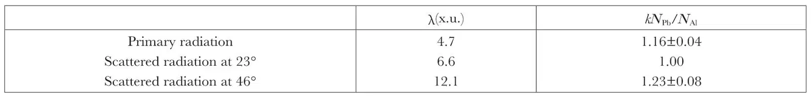

中文
中文Editor’s Note
Two Chinese physicists from the National Tsing Hua University here describe experiments in which hard gamma rays kick electrons out of lead or aluminium. They suggested that the data imply some kind of nuclear disintegration triggered by the gamma rays. However, as Ernest Rutherford notes in a short addendum to the paper, the authors had sent him a letter along with their paper clearly indicating that they had not yet heard about recent results demonstrating the creation of electron–positron pairs from energetic gamma rays in the strong field in the vicinity of the atomic nucleus. This process of pair creation, he suggests, might well provide a more natural explanation for the experimental results. 中文
IT is known that when a pencil of hard γ-rays of thorium-C" passes through lead, in addition to the absorption by electrons of the shell, there exists a type of nuclear absorption, accompanied by the emission of characteristic radiations of frequencies different from the primary1. The intensity of such radiations has been estimated, and it has been found that the total energy of the characteristic radiations emitted is much smaller than the total energy of the primary radiation absorbed by the nuclei2. This would be expected, if we assume that a nuclear disintegration occurs in such a process, so that a part of the absorbed energy is spent. From this point of view, we have tried to detect electrons which might be ejected from the lead nuclei by the primary γ-quanta. 中文
In our experiment, the γ-ray source was a radium–thorium preparation equivalent to 10 mgm. of radium. Two Geiger–Müller counters, one having an aluminium wall and the other a lead wall, were used. The counters had equal inner dimensions and approximately equal mass per square cm. of the wall (that is, 0.92 mm. thick for the aluminium counter and 0.22 mm. thick for the lead counter). Let NAl and NPb be the number of electrons produced in equal time intervals by a given beam of γ-rays in the aluminium and lead counters respectively. The ratio NPb/NAl as a function of the wave-length λ of the incident γ-radiation will at first decrease with decreasing λ, due to the diminishing photoelectric absorption of lead. As the wave-length further decreases, the ratio NPb/NAl might, however, rise again, if the heavy lead nuclei begin to be disintegrated by γ-quanta of wave-length less than a certain value and the electrons ejected from the lead nuclei in the disintegration process add themselves to NPb. 中文
By using a beam of γ-rays of thorium-C" filtered through 2 cm. of lead and scattered by iron at different angles, we measured the ratios NPb/NAl for γ-rays of different wave-lengths. The experimental result is shown in the accompanying table, where NPb/NAl is multiplied by a constant k such that the value kNPb/NAl is unity for the scattered radiation at 23°. 中文

In the table, the ratio NPb/NAl for λ = 6.6 x.u. is seen to be smaller than that for λ = 12.1 x.u., and for λ = 4.7 x.u. it again rises as was expected if electrons were ejected from the lead nuclei by the hard radiation. The difference of the two ratios for λ = 4.7 x.u. and 6.6 x.u. is about 16 percent. Now, the increase of the ratio NPb/NAl for λ = 4.7 x.u. might also result from a difference in the scattering effect of the lead nuclei and aluminium nuclei towards the Compton recoil electrons produced in the counter walls by the incident γ-rays. If this were the case, the difference of the ratios for γ = 6.6 x.u. and 4.7 x.u. should be more pronounced by using counters of thicker walls, since the effect of scattering increases with thickness of the wall. But the same result, namely, a difference of about 16 percent between the two ratios, was obtained when the experiment was repeated with a lead counter with walls 0.3 mm. thick and an aluminium one with walls 1.2 mm. thick. Therefore the above result seems to support the view that the lead nuclei are disintegrated by the hard γ-rays. 中文
The details of the experiment will be published elsewhere. 中文
C. Y. Chao and T. T. Kung
* * *
It is obvious from a letter to me which accompanied the above communication that Prof. Chao and Mr. Kung have not yet heard of the recent work concerning the positive electron, and in particular of the creation of a pair of electrons, a negative and a positive, by the conversion of a γ-ray of high energy in the strong electric field of a nucleus. The experiments they describe provide valuable additional evidence of this phenomenon, and would doubtless have been interpreted by them in this way rather than as a nuclear disintegration. It is interesting to note that the magnitude of the effect is about the same as is found in other experiments. 中文
Rutherford
(132, 709; 1933)
C. Y. Chao and T. T. Kung: Department of Physics, National Tsing Hua University, Peiping, China, Sept. 4.
References:
1. Chao, Phys. Rev., 33, 1519 (1930); Gray and Tarrant, Proc. Roy. Soc., A, 136, 662 (1932).
2. Gray and Tarrant, Proc. Roy. Soc., A, 136, 662 (1932). Chao, Science Reports of National Tsing Hua University, lst series, 1, 159 (1932).